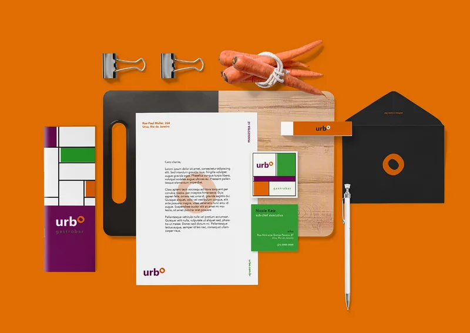
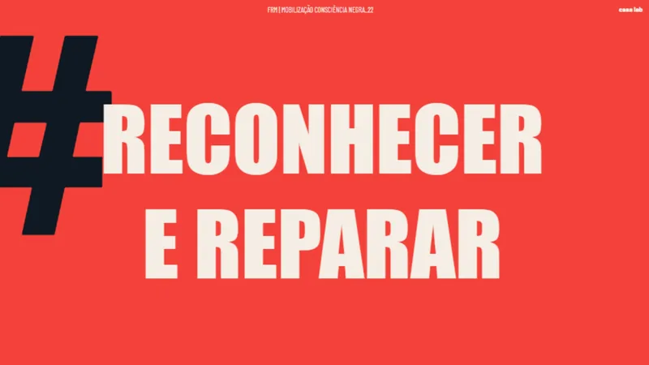
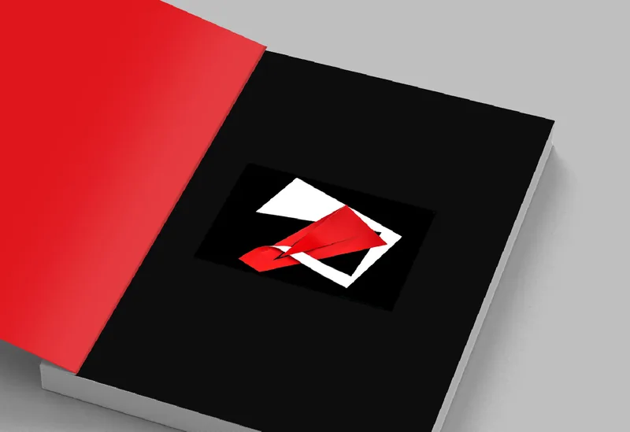
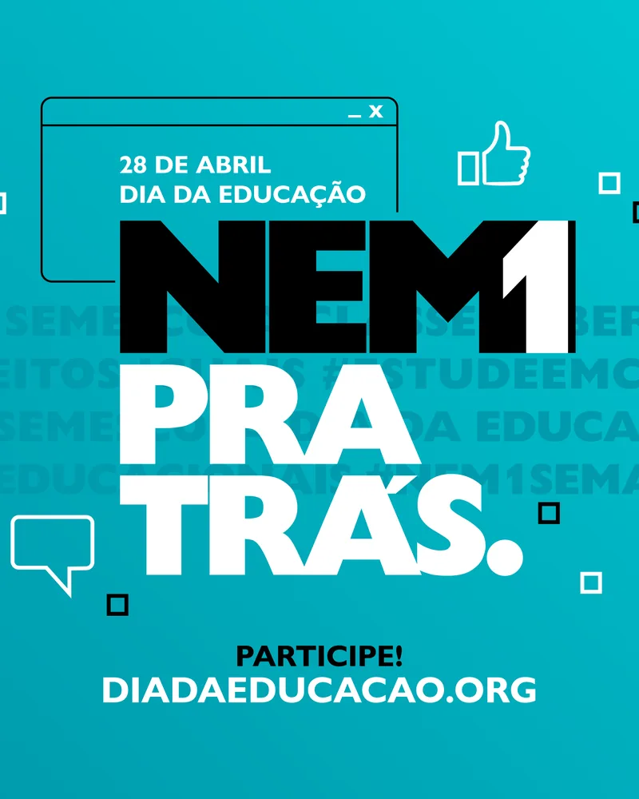
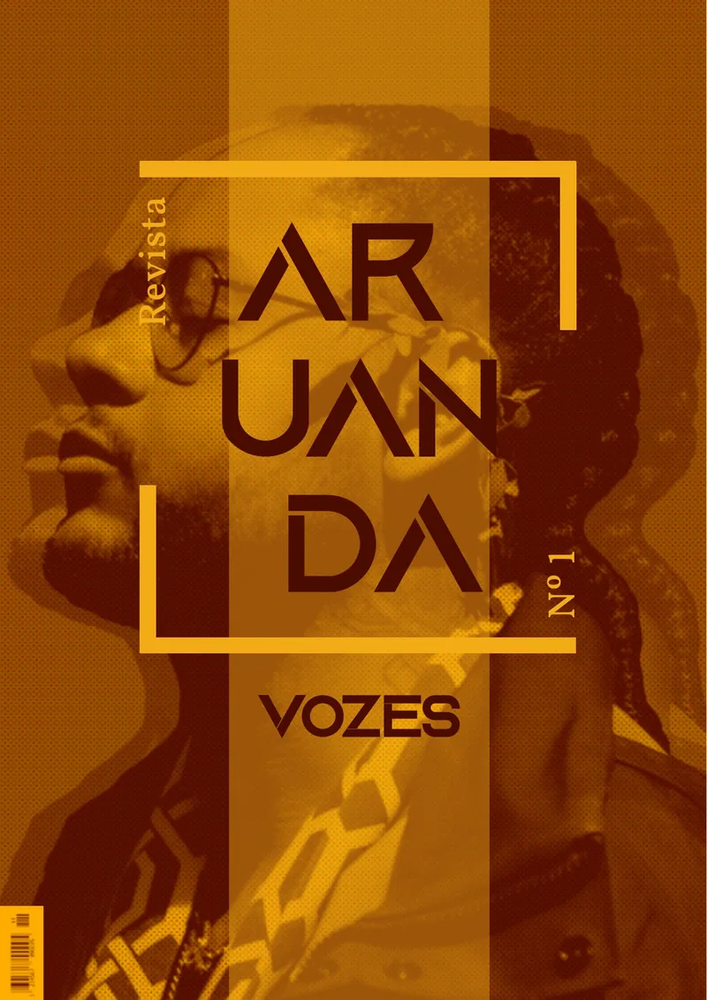
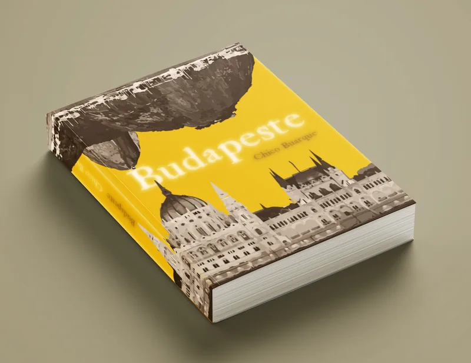

Rafaela Senceite
Designer gráfica e diretora de arte
Sete anos de trabalho em identidade visual, design editorial e comunicação institucional, entre projetos de marca para clientes e campanhas da Fundação Roberto Marinho.
Contato
Disponível para trabalhar em identidade visual, design editorial e comunicação institucional. Rio de Janeiro, Niterói, São Paulo e Belo Horizonte, presencial, híbrido ou remoto.
Projetos
-

01Urbo Gastrobar
Identidade visual · 2020 · Nicole Katz
Identidade de um gastrobar construída a partir de um anel e de um padrão modular que cobre superfícies inteiras sem repetir o logotipo.
-

02Reconhecer e Reparar
Comunicação institucional · 2022 · Fundação Roberto Marinho
Campanha de mobilização sobre racismo estrutural em que o dado e a fonte são o próprio elemento gráfico.
-

03Múltiplo
Editorial · 2021 · Disciplina Projeto Editorial, UFRJ
Livro sobre Ferreira Gullar que reúne biografia, cronologia, poemas e obras em um só volume, com papel dobrado como imagem-conceito.
-

04Nem 1 Pra Trás
Campanha institucional · 2024 · Fundação Roberto Marinho
Campanha do Dia da Educação com um sistema que fala com estudantes, professores e organizações parceiras nos mesmos formatos.
-

05Revista Aruanda
Editorial · 2021 · Disciplina Projeto Grid e Tipografia, UFRJ
Revista sobre manifestações artísticas de pessoas negras, em que cada edição tem um tema e uma cor e a estrutura se mantém.
-

06Budapeste
Editorial · 2021 · Disciplina Projeto Editorial, UFRJ
Redesign do romance de Chico Buarque, com a cor tirada de uma frase do próprio livro e o título espelhado na quarta capa.
Sobre
Bacharela em Comunicação Visual Design pela UFRJ. Trabalho com identidade visual, design editorial e comunicação institucional, com passagem por projetos de marca para clientes e por campanhas da Fundação Roberto Marinho.
Também atendo como freelancer desde 2019, e preparo arquivo para impressão e fechamento gráfico.
Ferramentas
Photoshop, Illustrator, InDesign, Premiere e Dreamweaver, Figma, Canva, Trello, Miro e o pacote Office.
Formação
Bacharelado em Comunicação Visual Design, UFRJ, 2019 – 2023.
Experiência
-
Designer gráfica
Fundação Roberto Marinho · 04/22 – 12/24
Criação e desdobramento de artes para peças institucionais e promocionais das marcas FRM: Aprendiz Legal, Futura, Telecurso e co.liga.
-
Estagiária
Fundação Roberto Marinho · 06/21 – 04/22
Desdobramento de identidade visual em peças institucionais, campanhas de comunicação interna e divulgação da programação do Futura.
-
Designer gráfica
Milam Studio · 07/20 – 07/21
Desenvolvimento experimental de identidade visual, ícones e signos tridimensionais, fluidos e parametrizados.
-
Designer gráfica
Museu Espaço Ciência Viva · 04/16 – 04/17
Design e ilustração de folderes e pôsteres para divulgação de eventos.
-
Designer gráfica
Museu Espaço Ciência Viva · 03/14 – 10/14
Desenvolvimento e ilustração do jogo educativo “Os Vingadores da Saúde”.